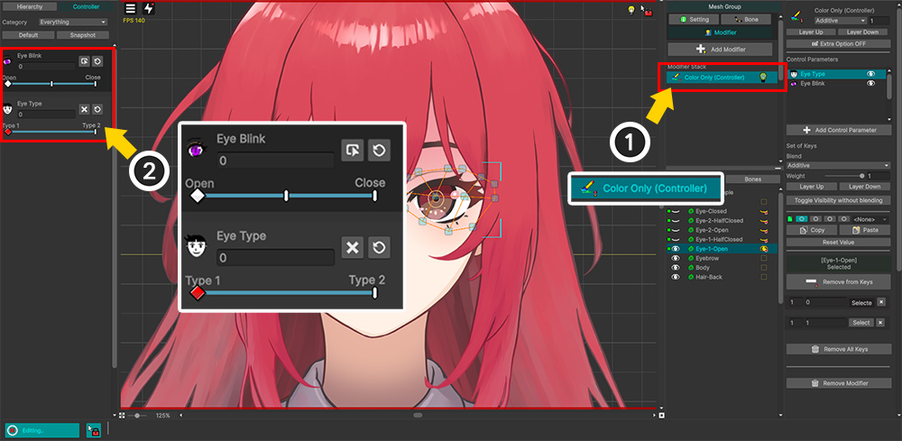
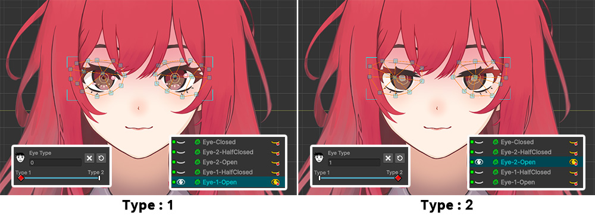
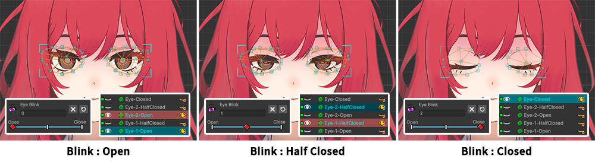
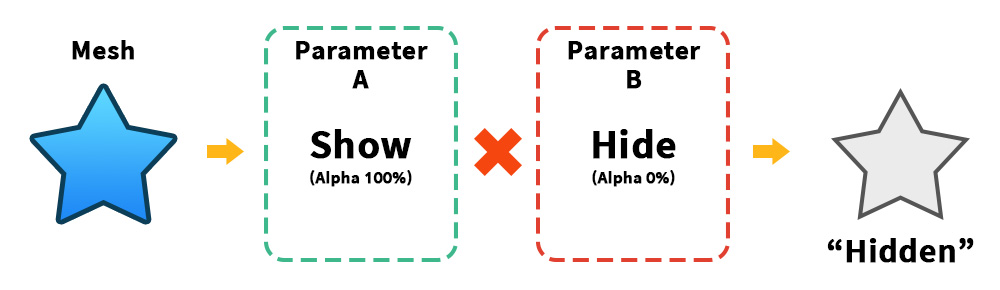
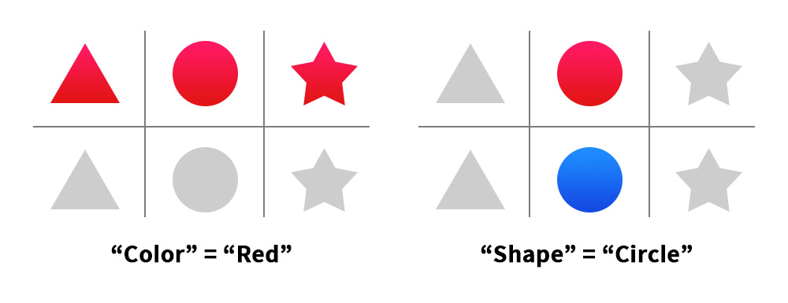
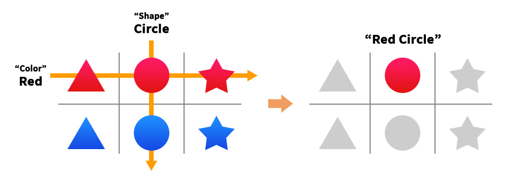
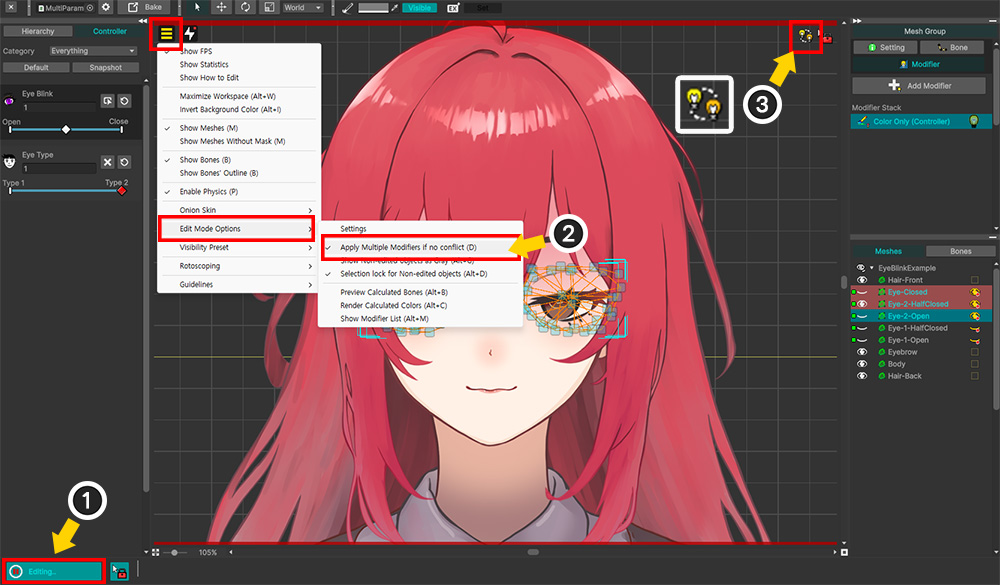

AnyPortrait > 메뉴얼 > 다중 값의 가시성 규칙
다중 값의 가시성 규칙
컨트롤 파라미터나 키프레임 애니메이션으로 메시를 숨기거나 보이게 하는 것은 캐릭터의 표정 등을 표현하는 가장 효과적인 방법 중 하나입니다.
이것을 활용하여 캐릭터의 감정에 따른 표정, 캐릭터가 눈을 뜨거나 감기, 입을 벌리거나 다물기 등을 복합적으로 표현할 수 있습니다.
그런데, 2개 이상의 컨트롤 파라미터나 모디파이어의 값들을 조합하여 메시를 보이게 하는 과정에서 사용자들이 어려움을 겪기도 합니다.
종종 저희 팀에게 "여러 표정을 가진 캐릭터가 눈을 깜빡일때, 눈 메시가 사라져버리는 문제"를 문의하시는데, 그것은 바로 이 페이지에서 다루는 규칙에 의한 현상입니다.
이 페이지에서는 해당 문제를 예시로 들어, 다중 모디파이어 값에 의한 가시성 규칙이 어떻게 동작하는지 설명합니다.
표정과 눈 깜빡임 조합의 문제 재현

문제를 재현하기 위한 예제 캐릭터입니다.
2개의 표정을 가지고 있으며, 메시의 가시성을 전환하여 눈을 깜빡이도록 만들 것입니다.

눈 모양을 결정하는 2개의 컨트롤 파라미터 ("Type", "Blink")에 매핑할 메시들을 정리하면 위와 같습니다.
"Eye 1"은 살짝 웃는 표정이며, "Eye 2"는 조금 멍한 상태의 표정입니다.
눈을 감는 과정은 3개의 프레임들로 구성되어 있습니다.
각각 "Open", "Half Closed", "Closed" 입니다.
각 상태를 조합하여 총 6개의 형상이 나올 수 있는데, 눈을 감은 표정은 표정과 무관하므로 1개의 메시(Eye Closed)를 공유하여 표현했습니다.
이제 총 5개의 메시들을 모디파이어에 등록하고 컨트롤 파라미터로 제어할 수 있게 설정해봅시다.

(1) Color Only (Controller) 모디파이어를 등록합니다.
(2) Type, Blink의 2개의 컨트롤 파라미터에 5개의 눈 메시들을 모두 등록합니다.
이제 2개의 컨트롤 파라미터에 키를 추가하고, 키에서의 메시들의 가시성을 설정해봅시다.

먼저 캐릭터의 표정을 전환하는 "Type" 컨트롤 파라미터에서의 가시성을 설정합니다.
총 2개의 키("1", "2")를 생성했습니다.
- "Type"이 "1"의 값을 가질 때는 "Eye 1 Open" 메시만 보이도록 설정했습니다.
- "Type"이 "2"의 값을 가질 때는 "Eye 2 Open" 메시만 보이도록 설정했습니다.
힌트
이 페이지에서 다루는 가시성 규칙을 이미 알고 계신 분들은 이 단계가 문제의 원인인 것을 알 수 있습니다.
이어지는 설명에서 원인과 해결 방법을 확인해보세요.

다음은 캐릭터가 눈을 깜빡이도록 만드는 "Blink" 컨트롤 파라미터에서의 가시성을 설정합니다.
3개의 키("Open", "Half Closed", "Closed")를 생성했습니다.
- "Blink"가 "Open"의 값을 가질 때는 "Eye 1 Open" 메시와 "Eye 2 Open" 메시가 보여지도록 설정했습니다.
- "Blink"가 "Half Closed"의 값을 가질 때는 "Eye 1 Half Closed" 메시와 "Eye 2 Half Closed" 메시가 보여지도록 설정했습니다.
- "Blink"가 "Closed"의 값을 가질 때는 "Eye Closed" 메시만 보여지도록 설정했습니다.

편집 모드를 끄고 컨트롤 파라미터들을 조작하여 캐릭터의 눈 메시들이 정상적으로 전환되는지 확인해봅시다.
"Type" 파라미터를 조작하여 표정이 바뀌는 것은 정상적으로 표현이 되는 것을 볼 수 있습니다.
그런데 눈을 깜빡이도록 "Blink" 컨트롤 파라미터를 변경하니 눈 메시들이 완전히 사라져버리는 문제가 발생합니다.
각각의 컨트롤 파라미터를 선택하고 편집 모드에서 작업할 때는 문제가 없었는데, 2개의 컨트롤 파라미터를 조합하는 경우 메시가 사라져버리는 문제가 발생한 것입니다.
이 문제를 해결하기 위해서는 다중 값에서의 가시성 규칙을 이해할 필요가 있습니다.
가시성 규칙을 이해하기

하나의 메시를 대상으로 컨트롤 파라미터나 여러개의 모디파이어나 키프레임 값 등이 조합되어 보이게 하거나 숨기게 할 경우, 값들의 조합에 따라 어떤 결과가 나오는지 알아야 합니다.
AnyPortrait는 색상과 관련된 모든 연산에 "곱하기" 규칙이 적용됩니다.
가시성 및 Alpha 연산의 경우, 보여지는 상태는 1이며 숨겨진 상태는 0입니다.
이를 곱하면 "1 x 0 = 0" 이므로, 위 이미지와 같이 가시성 값 중 하나라도 "Hide"이면 메시는 숨겨진 상태가 됩니다.

조금 더 풀어서 표 형태로 정리해봤습니다.
메시의 가시성 값이 모두 "보여짐 (Show)"이면 메시는 렌더링됩니다.
하지만 가시성 값들 중 하나라도 "숨겨짐 (Hide)"이라면 메시는 렌더링되지 않습니다.
규칙 자체는 어렵지 않습니다.
그렇지만 이 규칙을 응용하여 "캐릭터의 표정"과 "눈 깜빡임"을 조합하여 표현할 때 어떤 식으로 값을 설정해야할 지는 조금 어려워보입니다.

두개의 컨트롤 파라미터로 여러 개의 메시들의 가시성을 제어하고자 할 때는, 위와 같이 표를 그려서 정리하면 이해하기 쉽습니다.
각각 "색상 (Color)"과 "모양 (Shape)"의 파라미터로 6개의 메시들의 가시성을 제어해봅시다.
먼저 표의 X축과 Y축에 각각의 파라미터를 할당하고, 파라미터의 각 값에 해당하는 메시들을 배치하면 위와 같은 표를 완성할 수 있을 것입니다.

이 표에서 각 컨트롤 파라미터의 키값에 따른 메시들의 가시성을 설정합니다.
예를 들어, "Color" 파라미터의 "Red" 키에서는 모양에 상관없이 모든 붉은색 메시들이 보여지도록 설정하고, 나머지는 숨겨지도록 만듭니다.
"Shape" 파라미터의 "Circle" 키에서는 색상이 상관없이 모든 원형 메시가 보여지도록 설정하고 나머지는 숨깁니다.
이런식으로 컨트롤 파라미터들의 키와 값들을 설정한다고 가정해봅시다.

2개의 컨트롤 파라미터가 조합되어 6개의 메시들 중 1개의 메시만 보여지도록 동작하는 과정을 표를 통해서 이해해봅시다.
먼저, "Color" 파라미터가 "Red"일 때는 1행의 메시들이 보여지고, 2행의 파란색 메시들은 숨겨질 것입니다.
이 상태에서 "Shape" 파라미터가 "Circle"이라면, 2열의 원형 메시들이 보여질 것입니다.
결과적으로 각 축에서 "보여지는 메시들의 교점"에 해당하는 1행 2열의 "Red Circle" 메시가 선택되어 렌더링될 것입니다.
힌트
가시성을 1과 0으로 바꾸어 표를 그려서 이해하면 쉽습니다.
각 파라미터가 담당하는 이미지의 속성 (형태, 색상 등) 외의 다른 속성은 고려하지 않고 값을 일괄적으로 할당한다라고 생각하면 쉽게 작업을 할 수 있을 것입니다.
문제 해결하기

다시 예제로 돌아와서, 이 캐릭터의 눈 메시들의 가시성을 표 형태로 정리해서 이해해봅시다.
캐릭터의 "표정 (Type)"을 Y축에 넣고, "눈 깜빡임 (Blink)"을 X축에 넣어서 각각의 눈 메시들을 배치합니다.
이제 컨트롤 파라미터의 키에서 어떤 메시들이 보여지도록 설정해야하는지 알 수 있을 것입니다.
규칙을 이해하고 앞으로 돌아가서 다시 돌이켜보면 "Type" 파라미터에 따른 메시들의 가시성이 잘못 설정되어 있는 것을 알 수 있습니다.

규칙에 맞게 메시들의 가시성을 다시 설정합니다.
- "Type"이 "1"의 값을 가질 때 "Eye 1 Open" 메시, "Eye 1 Half Closed" 메시 및 "Eye Closed" 메시들이 모두 보여지도록 설정합니다.
- "Type"이 "2"의 값을 가질 때 "Eye 2 Open" 메시, "Eye 2 Half Closed" 메시 및 "Eye Closed" 메시들이 모두 보여지도록 설정합니다.
이 예제의 경우 "Eye Closed" 메시는 표정에 무관하게 등장할 수 있습니다.
그렇다면 모든 "Type" 키에서 항상 보여지도록 설정해야합니다.
"Blink"의 경우는 다행히 가시성 값이 제대로 설정된 상태입니다.

이제 편집 모드를 해제하여 테스트를 해봅시다.
이전과 달리, 표정과 조합하여 캐릭터의 눈을 감기게 만들 수 있게 되었습니다.
편집 모드에서도 가시성 연산 결과를 볼 수 있어요

편집 모드에서는 기본적으로 대상 컨트롤 파라미터나 모디파이어 외에는 모두 비활성화 됩니다.
그래서 다중 값이 조합된 결과를 보려면 편집 모드를 해제해야 합니다.
그렇지만 편집 모드 옵션 (관련 페이지)을 변경하여 다른 모디파이어나 다른 컨트롤 파라미터에 의한 연산 결과를 편집 모드에서도 미리 볼 수 있습니다.
(1) 편집 모드를 켭니다.
(2) 보기 메뉴를 열고, "Edit Mode Options > Apply Multiple Modifiers if no conflict" (단축키 D )를 활성화하면 조합된 색상 결과를 편집 모드에서 볼 수 있습니다.
(3) 작업 공간의 우측 상단 아이콘을 확인하여 다중 값이 편집 모드에서 조합되어 보여지고 있는 상태인지 알 수 있습니다.